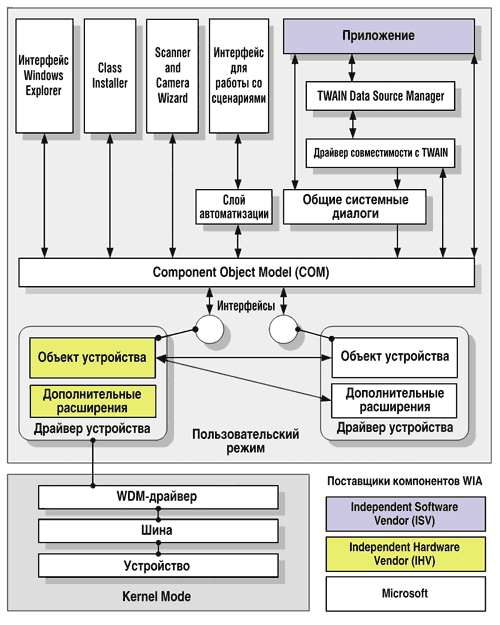
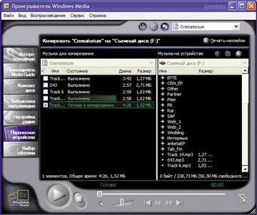
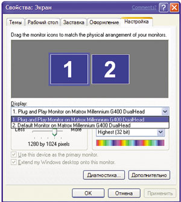
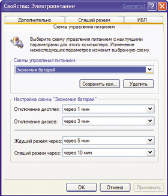

Поддержка аппаратуры в Windows ХР всесторонне усовершенствована. Новая ОС поддерживает технологию Plug and Play для сотен устройств, не поддерживаемых Windows 2000, а также включает расширенную поддержку Universal Serial Bus (USB), IEEE 1394, Peripheral Component Interconnect (PCI) и других шин. Более того, в Windows ХР усовершенствована сама технология Plug and Play, что увеличило производительность и упростило работу с устройствами, особенно их установку. Модель драйверов без существенных изменений взята из Windows 2000, от Windows Ме унаследован Windows Image Acquisition (WIA) - развитый интерфейс для получения статичных изображений от таких устройств, как сканеры и цифровые камеры.
Windows XP поддерживает не только больше усовершенствованных драйверов, но и новые устройства и классы устройств, включая беспроводные сетевые адаптеры; многоканальные USB-микрофоны; расширенные клавиатуры с интерфейсами PS/2 и USB, содержащие дополнительные клавиши для мультимедийных функций, просмотра Web, управления электропитанием и других целей. Поддерживаются также мониторы с разрешением до 200 точек на дюйм.
В этой статье описаны лишь некоторые возможности и технологии Windows XP, улучшающие управление как новой, так и традиционной аппаратурой. Отдельно следует упомянуть поддержку 64-разрядного процессора Intel Itanium - для него Microsoft разработала специальную 64-разрядную версию ОС, Windows XP 64-Bit Edition (см. в этом номере статью "64 лучше, чем 32?").
Windows Image Acquisition
Для поддержки устройств захвата неподвижных изображений, таких, как сканер, цифровая камера или Web-камера, в Windows XP служит интерфейс Windows Image Acquisition (WIA), который основан на архитектуре Windows Driver Model (WDM). WIA обеспечивает надежное взаимодействие приложений и устройств захвата изображений, оптимизируя процесс получения изображения и передачи его на компьютер для редактирования и дальнейшего использования.
WIA поддерживает интерфейсы SCSI, IEEE 1394, USB и цифровые устройства получения неподвижных изображений с последовательным интерфейсом. Устройства с инфракрасными, параллельными и последовательными интерфейсами, подключаемыми к стандартным СОМ-портам, поддерживаются при помощи стандартных существующих интерфейсов.
Архитектура WIA включает как API, так и интерфейс драйверов устройств (Device Driver Interface, DDI). В нее входят компоненты, поставляемые как Microsoft, так и другими поставщиками аппаратного и программного обеспечения (рис. 1).
|  |
| Рис. 1. Архитектура Windows Image Acquisition. |
Мастер Scanner and Camera Wizard позволит получать изображения с любых WIA-совместимых устройств, установленных в системе. Страница предварительного просмотра в мастере позволяет выбрать различные режимы сканирования и настроить параметры получаемого изображения. По умолчанию мастер вызывается при активизации WIA-совместимых сканеров (событие "сканирование") и при подключении цифровых фотокамер, поддерживающих Plug and Play (событие "подключение"). Кроме того, он может быть вызван при установке на компьютер таких носителей информации, как модули флэш-памяти или компакт-диски, содержащие файлы с изображениями (событие "установка носителя"). По умолчанию мастер не вызывается для видеокамер.
Windows ХР позволяет также в ответ на указанные события вызывать не мастер, а другое приложение обработки изображений, если оно совместимо с WIA-.
При работе с цифровыми фотокамерами мастер позволяет выбрать одно или несколько изображений, чередовать их и просматривать такие сведения, как размер изображения и разрешение. Работая с видеокамерой, можно выбрать предварительно полученные неподвижные изображения, чередовать их, просматривать параметры изображения и даже смотреть "живое" видео вместе с неподвижными изображениями. Картинкам можно давать имена, сохранять их в папке Мои рисунки (My Pictures), систематизировать, используя вложенные папки, и публиковать их в Web. Для устройств, не поддерживающих Plug and Play, мастер можно запустить из меню Стандартные (Accessories).
Особые окна Windows Explorer - Мой компьютер (My Computer) и Мои рисунки (My Pictures), в дополнение к Сканерам и камерам (Scanners and Cameras) на Панели управления Control Panel), предоставляют доступ к WIA-устройствам. Так, в окне Мой компьютер (My Computer) появляется значок для каждого установленного WIA-устройства. Щелчок на значке камеры выводит окно с пиктограммами изображений, элементы управления для сохранения изображений, а также видео в реальном времени, если это Web-камера или цифровая видеокамера, поддерживающая WIA. В папке Мои рисунки (My Pictures) содержатся значки изображений, ярлык для мастера WIA Scanner and Camera Wizard, встроенное средство демонстрации слайдов, окно предварительного просмотра с расширенными возможностями и средства вывода изображений на печать из окна предварительного просмотра. Отсюда изображение можно переслать по электронной почте, заказать его печать через Интернет, разместить его на Web-узле и сохранить на CD-R и CD-RW.
Получить и обработать изображения поможет мастер Scanner and Camera Wizard или другое приложение. Есть два основных вида WIA-приложений: для редактирования изображений, например, Adobe PhotoShop и Microsoft Picture It!, а также для создания документов, содержащих графические данные, например, Microsoft Word и программа графических презентаций Microsoft PowerPoint (последние не позволяют редактировать изображения).
Для упрощения установки и удаления WIA-устройств службами Windows Plug and Play служит компонент WIA Imaging Class Installer. Этот компонент также поддерживает устройства Plug and Play для шин USB, SCSI, IEEE 1394 и фотокамер с последовательным интерфейсом.
Кроме того, в WIA включен интерфейс поддержки сценариев, позволяющий программистам создавать WIA-приложения на Visual Basic и языках сценариев.
TWAIN Data Source Manager (DSM) - стандартная библиотека, позволяющая TWAIN-приложениям абстрагироваться от особенностей конкретных устройств получения неподвижных изображений. В Windows XP WIA использует DSM вместе с драйверами, обеспечивающими совместимость с TWAIN, гарантируя работу приложений, поддерживающих TWAIN версии 1.7 или более поздних, но еще не поддерживающих WIA.
Все драйверы устройств для сканеров и камер, поставляемые с Windows XP, используют объекты общих системных диалогов WIA. Таких объектов четыре: для сканеров, фотокамер, видеокамер и выбора устройства. В пользовательском интерфейсе они представлены диалоговыми окнами, позволяющими предварительно просматривать уменьшенные или полноразмерные изображения; вырезать, сканировать и устанавливать параметры сканируемых изображений; отображать сведения об изображении; просматривать "живое" или предварительно записанное видео и захватывать отдельные кадры; выбирать и устанавливать свойства WIA-устройств.
При запуске драйвер WIA-устройства создает системный компонент - объект устройства. Есть четыре типа объектов устройств: мини-драйвер WIA, стандартный планшетный сканер WIA, стандартная фотокамера WIA на основе промышленного стандарта Picture Transfer Protocol (PTP) и стандартная видеокамера WIA.
Когда приложение впервые связывается с устройством, менеджер устройств WIA Device Manager определяет все устройства, создает для них объекты, устанавливает связь между приложением и объектом устройства, получает и устанавливает параметры устройства.
Расширенная поддержка цифрового аудио и видео
Средства работы с цифровым аудио и видео в Windows ХР основаны на предыдущих версиях Windows, но при этом поддерживают новые устройства и технологии, рассчитанные на цифровые носители.
Устройства и технологии цифрового аудио
В Windows ХР, как и в Windows 2000, поддержка цифровых аудиоустройств основана на архитектуре Windows Driver Model (WDM), которая позволяет ОС управлять несколькими аудиопотоками одновременно. Кроме того, Windows ХР, как и Windows 2000/Ме, поддерживает для цифрового аудио популярную спецификацию Audio Codec '97 (AC '97). Более того, Windows ХР поддерживает цифровые аудиоустройства для нескольких типов шин, включая PCI, ISA и PCMCIA, а также устройства, подключенные через USB и IEEE 1394.
Windows XP совместима с несколькими новыми технологиями, разработанными для улучшения воспроизведения и записи звука. Это:
- многоканальное воспроизведение в дополнительных аудиоформатах; громкость в многоканальной конфигурации может регулироваться отдельно для каждого динамика;
- функция обработки сигнала Acoustic Echo Cancellation (AEC), снижающая наводки, эхо и другие помехи во входном канале; при использовании этой технологии явно выигрывают USB-микрофоны;
- технология Global Effects (GFX), расширяющая поддержку аудиоустройств, подключаемых к USB, за счет применения драйверов-фильтров, например, для многоканальных USB-микрофонов.
Поддержка Digital Rights Management
Кроме перечисленных технологий, в Windows XP усовершенствована поддержка Digital Rights Management (DRM), которая позволяет авторам и компаниям звукозаписи защищать права собственности на музыку или другие данные, шифруя их цифровое представление и дополняя его правилами использования. Эти правила накладывают такие ограничения на число возможных прослушиваний и типы устройств, которые можно применять для воспроизведения.
Чтобы драйвер мог обрабатывать аудиоконтент, требующий "доверенных" устройств, он должен содержать DRM-подпись. Кстати, Windows XP использует DRM-подписи в файлах каталога драйвера для определения "доверенного" устройства. Для проигрывания контента, зашифрованного с применением DRM, аудиодрайверы WDM и связанные с ними фильтры должны быть DRM-совместимыми. Все аудиодрайверы в Windows XP удовлетворяют этому требованию.
Воспроизведение и хранение
Последние достижения в технологиях хранения данных упрощают и делают более доступной работу с CD-ROM и DVD. В Windows XP встроена поддержка чтения и записи устройств DVD-RОM с использованием файловой системы FAT16 или FAT32. Можно также читать диски в формате Universal Disk Format (UDF) версии 2.01, которая дополняет версию UDF 1.02 - современный стандарт для носителей DVD, включая диски DVD-ROM и DVD-видео. Кроме того, теперь Windows позволяет записывать собственные компакт-диски - непосредственно в ОС встроена удобная и эффективная технология их записи.
Запись компакт-дисков
Благодаря наличию API для работы с образами компакт-дисков, Windows XP позволяет записывать и CD-R, и CD-RW с помощью мастера CD Writing Wizard. После того, как вы выбрали файлы, которые нужно записать на компакт-диск, и инициировали процесс записи, ОС сначала создает полный образ записываемого диска на жестком диске, а затем посылает данные в виде потока на устройство записи. Предварительное создание образа диска минимизирует вероятность недогрузки буфера, из-за которой при записи возникают ошибки, приводящие к порче носителя.
Поддерживается аудиоформат Redbook, диски данных с файловыми системами Joliet и ISO 9660. Диски данных обычно содержат обе файловые системы на одном диске. Благодаря этому диск можно читать в любой ОС - Microsoft Windows, Apple Macintosh и т. п., а также на переносных MP3-плейерах, поскольку все они поддерживают как минимум ISO 9660. Кроме того, структура API позволяет расширять набор поддерживаемых форматов.
Windows XP предлагает несколько способов создания аудиодисков. Можно скопировать исходный компакт-диск на диск CD-R или CD-RW или выбрать отдельные звуковые файлы из музыкальной библиотеки и методом копирования/вставки либо через меню задач Windows XP перенести их на компакт-диск. Кроме того, приложение Windows Media Player 8 позволяет скопировать аудиофайлы на компакт-диск в формате Redbook (рис. 2), после чего его можно прочитать на любом проигрывателе компакт-дисков.
|  | Рис. 2. Копирование аудиофайлов на компакт-диск.
|
Запись в Windows XP выполняется отдельными дорожками. При этом каждую отдельную дорожку нельзя удалить или изменить, даже если запись проводилась на диск формата CD-RW, но такие диски можно полностью очистить и повторно использовать.
Чтобы создать аудиокомпакт-диск в формате Redbook из исходных файлов в формате WMA, MP3 или других поддерживаемых аудиоформатов, нужно лишь открыть папку, в которой хранится музыка, выбрать файлы, которые нужно скопировать на компакт-диск, и щелкнуть Copy to audio CD в меню Music Tasks. В результате запустится Windows Media Player, который используется для преобразования файлов в аудиоформат Redbook и записи их на компакт-диск. Можно также открыть вкладку Copy Music to CD или Portable Device в Windows Media Player и там выбрать нужные музыкальные произведения.
DualView
Хотя поддержка нескольких мониторов в Windows не нова (она существовала уже в Windows 98 и получила дальнейшее развитие в Windows Me/2000), Windows XP расширяет эту поддержку благодаря технологии DualView, предоставляющей дополнительные возможности настройки дисплеев для мобильных и настольных компьютеров.
Некоторые высококлассные дисплейные адаптеры, а также многие мобильные компьютеры поддерживают два или более интерфейса для мониторов на одном адаптере дисплея. DualView позволяет всем интерфейсам в один и тот же момент времени выводить разную информацию. Скажем, вы можете подключить монитор к мобильному компьютеру и использовать его встроенный дисплей вместе с внешним монитором, чтобы увеличить пространство рабочего стола.
Эта технология относительно проста. Драйвер адаптера дисплея регистрирует в ОС два или более отдельных экземпляра одного адаптера (в зависимости от числа выходов на адаптере) - по одному для каждого выходного порта. Настройка DualView для подобного адаптера показана на рис. 3.
|  | Рис. 3. Настройка DualView для двух дисплеев.
|
DualView очень похожа на функцию поддержки нескольких мониторов, но дополнительное достоинство этой технологии в том, что она не требует обновления BIOS, чтобы отключить VGA на вторичных устройствах. На переносных компьютерах основным монитором всегда считается ЖК-дисплей, и изменить это нельзя. На настольных компьютерах можно выбрать основной монитор (по умолчанию это монитор, подключенный к первому выходному порту видеоадаптера). DualView можно использовать на док-системах, однако Windows XP не поддерживает "горячую" расстыковку переносных компьютеров, настроенных на поддержку нескольких мониторов.
Электропитание
В Windows XP расширены возможности управления электропитанием для настольных и мобильных компьютеров. Как и Windows 2000, она поддерживает спецификацию Advanced Configuration and Power Interface (ACPI), обеспечивающую управление электропитанием и конфигурированием системы. Кроме того, в Windows XP есть ограниченная поддержка управления питанием систем на базе традиционного программного интерфейса Advanced Power Management (APM) API.
Главное отличие ACPI-совместимых систем в том, что в них электропитанием управляет сама ОС. В ранних архитектурах управления электропитанием, таких как APM, режимом питания системных устройств управляла подсистема BIOS, не привлекая к этому ОС.
Устройства и приложения, совместимые со спецификацией ACPI, могут реагировать на изменение параметров электропитания или инициировать такие изменения. Например, факт активизации приложения или устройства ввода, такого как мышь, вызывает включение полного питания системы. Если все приложения и устройства в течение некоторого времени пассивны, ОС пытается перевести компьютер в режим низкого потребления электроэнергии или "спящее" состояние (рис. 4). Потом, к примеру, поступает входной телефонный вызов, факс-модем "будит" компьютер и принимает факс. А потом все снова "засыпают"...
|  | Рис. 4. Управление электропитанием.
|
Но приложения могут быть разработаны так, чтобы предотвращать переход системы в "спящий" режим. Например, ПО для проведения презентаций может в течение долгого времени демонстрировать на экране один и тот же слайд, т. е. пребывать в пассивном состоянии, и тем не менее оно будет указывать ОС, что выключать питание монитора нельзя.